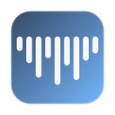

UTUVO Peek
音檔在 Finder 按空白鍵，就能看、聽、量。
Press Space on an audio file in Finder: see it, hear it, measure it.
教學影片 2:12（繁體中文旁白為 AI 語音；示範音檔為合成，表頭數值與 Finder 畫面為示意）
免費・MIT 開源・Developer ID 簽章並經 Apple 公證・macOS 14 以上、Apple Silicon
看得到什麼
- 響度：整合響度、True Peak（逐聲道）、響度範圍、Sample Peak；與 ffmpeg 交叉比對誤差 ≤ 0.1 LU
- Waveform／Channels／Spectrum 三種顯示
- 最多 7.1.4 的分軌波形與即時表頭
- 多聲道播放：介面輸出夠就直出，耳機自動轉雙耳
- BWF 時間碼、iXML、ADM、Dolby、RF64
- 不連網、不收資料，全部在你的 Mac 上計算
What it shows
- Loudness: integrated, per-channel true peak, LRA and sample peak — within 0.1 LU of ffmpeg
- Waveform, Channels and Spectrum views
- Per-channel lanes and live meters up to 7.1.4
- Multichannel playback: direct out, or binaural on headphones
- BWF time reference, iXML, ADM, Dolby, RF64
- No network, no analytics — everything runs on your Mac
安裝 Install
把 UTUVO Peek 拖到「應用程式」，打開一次再關掉，然後在 Finder 選音檔按空白鍵。
Drag UTUVO Peek to Applications, open it once, then press Space on an audio file in Finder.